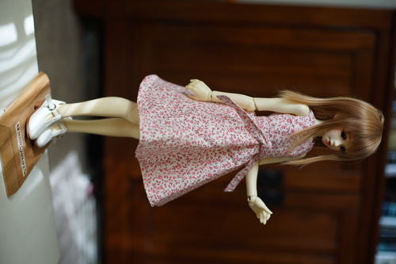

today i was brave thanks to some kind encouragement from pompon
i wore my himawari yukata outside! im always so worried some sjw crew is going to come up to me and give me a piece of their mind but no one did. i'm also worried someone's gonna come up and tell me my kitsuke is crap. i mean i'm not following the rules but i think it's cuter this way and having fun is what matters
i didn't think i was going to make it to the thrift store and back in my geta, so i wore some strappy leather wedges and brought my birks in my bag. of course the wedges took out the skin on my pinky toe so i had to switch before i walked back. dont tell anyone i wore birks with my yukata, that one is probably an unforgivable sin.
i was going to try the obi that came with this yukata but i found the yellow faux obi that i made for my tsukihi cosplay and i wore it because i thought the colors were cute together.
and here are my thrift store finds!!!
the inside lining of this skirt is that awful poly they use in halloween costumes. im seriously considering removing it.
wtf why is he so cute i wanna cry hes so cute
it needs some work but kiki or liccas could probably chill on it later! im gonna sand all that paint off
for the next time we have surprise company and our shower liner is disgusting.
seriously tho look at this bear. so cute. we're gonna put him on our christmas tree (that we dont have yet)
i spent a few days patterning this bodice and making this dress. it originally was supposed to have a lower heart shaped neckline but that kind of disappeared during drafting. it even has darts!!! i always hate how slim minis in the west get "modern" clothes so i wanted to make her something sweet and feminine. the skirt is a half circle divided into 3.
i was a little bit shocked to find out my math brain disappeared when i was having trouble mathing out that skirt. i sure dont do math more complicated than basic algebra anymore. im sure getting through a differential equations problem would be just about impossible for me now. its a shame since i spent so much time and money learning it. same with everything i learned in college tbh...
a guy at work asked to add me on social media and i told him i didnt have any and he was shocked! he asked me why and i told him and he recognized that social media was making him miserable too. it's funny how people still wont get rid of it even when they can see what it does to them. it did take me many years to get away from it though. it's not an effortless task.
how do you stop the /toy/ bjd thread from turning into a giant recast argument? you really cant...
i left the /toy/ bjd threads after i lost my original bjd guide and got the opposite of sympathy (and i always found damasquerade to be pretty annoying). i'm pretty sure they stopped appearing shortly after because people could not stop fighting about recasts. these people seem absolutely miserable. why talk about dolls if its not for fun?? barely anyone is even posting cute dolls. on one hand, the thread gets bumped. on the other, no one wants to participate anymore.
i understand DoA's ban on even mentioning recasts. the moment anyone is allowed to talk about it everything devolves into misery. /jp/'s threads dont usually have this issue luckily but it always seems like half of them are like "haha i wanna f*ck my doll!!" I still prefer /jp/ over /toy/ despite this
anyway, please enjoy your hobbies.